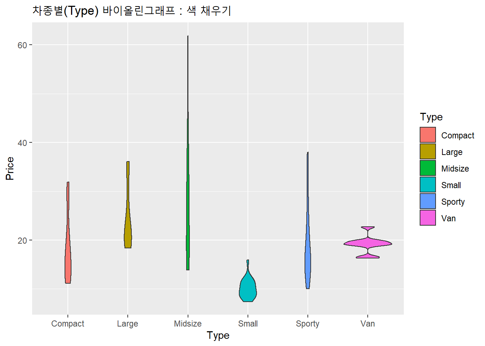

7.4 바이올린 그래프
다음으로 바이올린 그래프와 커널 밀도 곡선을 결합해 놓은 바이올린 그래프(Violin Plot)를 작성해 보겠습니다.
바이올린 그래프는 geom_violin() 함수를 이용하여 그릴 수 있습니다.
제공해 주는 정보량이 많아서 바이올린 그래프(Violin Plot) 또한 유용한 편인데요, 실전에서는 별로 사용하지 않게 되는 그래프이기도 합니다. ^^;
7.4.1 데이터 세트
데이터는 MASS 패키지에 들어있는 Cars93 데이터 프레임 데이터 셋에서 가격(Price)과 자동차 유형(Type) 변수를 활용하여 바이올린 그래프를 그려보겠습니다.
library(ggplot2)
# Cars93 데이터 프레임
library(MASS)
str(Cars93)## 'data.frame': 93 obs. of 27 variables:
## $ Manufacturer : Factor w/ 32 levels "Acura","Audi",..: 1 1 2 2 3 4 4 4 4 5 ...
## $ Model : Factor w/ 93 levels "100","190E","240",..: 49 56 9 1 6 24 54 74 73 35 ...
## $ Type : Factor w/ 6 levels "Compact","Large",..: 4 3 1 3 3 3 2 2 3 2 ...
## $ Min.Price : num 12.9 29.2 25.9 30.8 23.7 14.2 19.9 22.6 26.3 33 ...
## $ Price : num 15.9 33.9 29.1 37.7 30 15.7 20.8 23.7 26.3 34.7 ...
## $ Max.Price : num 18.8 38.7 32.3 44.6 36.2 17.3 21.7 24.9 26.3 36.3 ...
## $ MPG.city : int 25 18 20 19 22 22 19 16 19 16 ...
## $ MPG.highway : int 31 25 26 26 30 31 28 25 27 25 ...
## $ AirBags : Factor w/ 3 levels "Driver & Passenger",..: 3 1 2 1 2 2 2 2 2 2 ...
## $ DriveTrain : Factor w/ 3 levels "4WD","Front",..: 2 2 2 2 3 2 2 3 2 2 ...
## $ Cylinders : Factor w/ 6 levels "3","4","5","6",..: 2 4 4 4 2 2 4 4 4 5 ...
## $ EngineSize : num 1.8 3.2 2.8 2.8 3.5 2.2 3.8 5.7 3.8 4.9 ...
## $ Horsepower : int 140 200 172 172 208 110 170 180 170 200 ...
## $ RPM : int 6300 5500 5500 5500 5700 5200 4800 4000 4800 4100 ...
## $ Rev.per.mile : int 2890 2335 2280 2535 2545 2565 1570 1320 1690 1510 ...
## $ Man.trans.avail : Factor w/ 2 levels "No","Yes": 2 2 2 2 2 1 1 1 1 1 ...
## $ Fuel.tank.capacity: num 13.2 18 16.9 21.1 21.1 16.4 18 23 18.8 18 ...
## $ Passengers : int 5 5 5 6 4 6 6 6 5 6 ...
## $ Length : int 177 195 180 193 186 189 200 216 198 206 ...
## $ Wheelbase : int 102 115 102 106 109 105 111 116 108 114 ...
## $ Width : int 68 71 67 70 69 69 74 78 73 73 ...
## $ Turn.circle : int 37 38 37 37 39 41 42 45 41 43 ...
## $ Rear.seat.room : num 26.5 30 28 31 27 28 30.5 30.5 26.5 35 ...
## $ Luggage.room : int 11 15 14 17 13 16 17 21 14 18 ...
## $ Weight : int 2705 3560 3375 3405 3640 2880 3470 4105 3495 3620 ...
## $ Origin : Factor w/ 2 levels "USA","non-USA": 2 2 2 2 2 1 1 1 1 1 ...
## $ Make : Factor w/ 93 levels "Acura Integra",..: 1 2 4 3 5 6 7 9 8 10 ...7.4.2 기본 바이올린 그래프
그럼, 먼저 Cars93 데이터 프레임 내 가격(Price) 변수 하나를 가지고 geom_violin()을 사용하여 바이올린 그래프(Violin Plot)을 그려보겠습니다.
# 기본 바이올린 그래프 그리기
ggplot(Cars93,
aes(x = 1, # 바이올린 그래프는 기본적으로 x = 1로 설정합니다.
y = Price)) + # Y축의 변수로 Price를 설정합니다.
geom_violin() + # 바이올린 그래프를 그립니다.
ggtitle("기본 바이올린 그래프")
7.4.3 바이올린 그래프와 박스 그래프 겹쳐 그리기
그런데 바이올린 그래프에 geom_boxplot() 함수를 추가하여 박스 그래프를 겹쳐 그릴 수 있습니다.
# 기본 바이올린 그래프 + 박스 그래프
ggplot(Cars93,
aes(x = 1,
y = Price)) +
geom_violin() +
geom_boxplot(width = 0.1) + # 박스 그래프의 너비를 0.1로 해서 겹쳐 그립니다.
ggtitle("기본 바이올린 그래프 + 박스 그래프")7.4.4 X축의 이름과 척도 없애기
기본 바이올린 그래프를 그려 보면 X 축에 의미가 없는 척도가 표시가 됩니다. scale_x_continuous() 함수의 모수에 breaks = NULL을 설정하여 X축의 이름을 없애고, theme() 함수의 모수에 axis.title.x = element_blank() 를 설정하여 X축의 척도를 생략할 수 있습니다.
# X축의 이름과 척도 없애기
ggplot(Cars93, aes(x = 1, y = Price)) +
geom_violin() +
# geom_boxplot(width = 0.1) +
scale_x_continuous(breaks = NULL) + # x축 이름 생략
theme(axis.title.x = element_blank()) + # x축 척도 생략
ggtitle("X축의 이름과 척도 없애기")
7.4.5 이상값의 표현
앞에서의 바이올린 그래프의 윗 부분에 가격(Price) 데이터의 이상치(outliers)가 차지하고 있습니다. 그런데 이상치는 바이올린 그래프에서 표시하는 것보다는 박스 그래프에서 표시하는 것이 더 좋습니다.
따라서, geom_boxplot() 함수를 이용하여 이상치를 표시하고, 크기는 outlier.size 모수에, 모양은 outlier.shape 모수에, 그리고 색은 outlier.colour 등의 모수에 지정해 줍니다.
다음의 예는 이상치 데이터에 대하여 모양을 13번 모양3으로 하고, 그 크기는 3(기본 값은 1)으로 그리고 색은 “red”로 표시하는 예입니다.
# 바이올린 플롯의 이상치 표시
ggplot(Cars93, aes(x = 1, y = Price)) +
geom_violin(outlier.size = 3, # 이상치 데이터 기호의 크기를 3으로 설정합니다.
outlier.shape = 13, # 이상치 데이터 기호의 모양을 13으로 설정합니다.
outlier.colour = "red") + # 이상치 데이터 기호의 색을 "red"로 설정합니다.
# geom_boxplot(width = 0.1) +
scale_x_continuous(breaks = NULL) +
theme(axis.title.x = element_blank()) +
ggtitle("바이올린 플롯의 이상치 표시")## Warning: Ignoring unknown parameters: outlier.size, outlier.shape,
## outlier.colour# 바이올린 플롯의 이상치 표시
ggplot(Cars93, aes(x = 1, y = Price)) +
geom_violin() +
geom_boxplot(width = 0.1,
outlier.size = 3, # 이상치 데이터 기호의 크기를 3으로 설정합니다.
outlier.shape = 13, # 이상치 데이터 기호의 모양을 13으로 설정합니다.
outlier.colour = "red") + # 이상치 데이터 기호의 색을 "red"로 설정합니다.
scale_x_continuous(breaks = NULL) +
theme(axis.title.x = element_blank()) +
ggtitle("바이올린 플롯의 이상치 표시")7.4.6 바이올린 그래프에 데이터를 점으로 표시하기
바이올린 그래프에 데이터를 점으로 표시하는 것은 박스 그래프에서와 마찬가지로 geom_jitter() 함수를 이용헙니다.
또한 geom_jitter() 함수 안의 shape 모수를 이용하여 점의 모양4을 그리고 position 모수를 이용하여 점의 위치를 설정할 수 있습니다.
# 바이올린 그래프에 데이터를 점으로 표시하기
ggplot(Cars93, aes(x = 1, y = Price)) +
geom_violin() +
geom_boxplot(width = 0.1,
outlier.size = 3,
outlier.shape = 13,
outlier.colour = "red") +
scale_x_continuous(breaks = NULL) +
theme(axis.title.x = element_blank()) +
geom_jitter() + # 데이터를 점으로 표시합니다.
ggtitle(" 바이올린 그래프에 데이터를 점으로 표시하기")
# 바이올린 그래프에 데이터를 점으로 표시하기
ggplot(Cars93, aes(x = 1, y = Price)) +
geom_violin() +
geom_boxplot(width = 0.1,
outlier.size = 3,
outlier.shape = 13,
outlier.colour = "red") +
scale_x_continuous(breaks = NULL) +
theme(axis.title.x = element_blank()) +
scale_x_continuous(breaks = NULL) +
theme(axis.title.x = element_blank()) +
geom_jitter(shape = 16, # 데이터 기호의 모양을 16으로 설정합니다.
position = position_jitter(width = 0.1,
height = 0.1)) + # 점의 위치를 설정합니다.
ggtitle(" 바이올린 그래프에 데이터를 점으로 표시하기")## Scale for 'x' is already present. Adding another scale for 'x', which will
## replace the existing scale.
7.4.7 수평 바이올린 그래프
coord_flip() 함수를 추가하여 바이올린 그래프를 수평으로 회전시킬 수 있습니다.
# 수평 바이올린 그래프
ggplot(Cars93, aes(x = 1, y = Price)) +
geom_violin() +
geom_boxplot(width = 0.1,
outlier.size = 3,
outlier.shape = 13,
outlier.colour = "red") +
scale_x_continuous(breaks = NULL) +
theme(axis.title.x = element_blank()) +
geom_jitter(shape = 16,
position = position_jitter(width = 0.1,
height = 0.1)) +
ggtitle("수평 바이올린 그래프") +
coord_flip() # 바이올린 그래프를 수평으로 회전시킵니다. 
7.4.8 바이올린 그래프의 색 지정하기
또한 geom_violin() 함수에 fill 모수를 추가하여 채우기 색을 그리고 colour 모수를 추가하여 바이올린 그래프의 테두리 색을 설정할 수 있습니다.
# 바이올린 그래프의 색 지정하기
ggplot(Cars93, aes(x = 1, y = Price)) +
geom_violin(fill = "yellow", # 채우기 색을 지정합니다.
color = "blue") + # 테두리 색을 지정합니다.
geom_jitter(shape = 16,
position = position_jitter(width = 0.1, height = 0.1)) +
scale_x_continuous(breaks = NULL) +
theme(axis.title.x = element_blank()) +
ggtitle("바이올린 그래프의 색 지정하기") 
7.4.9 바이올린 그래프에 평균 추가하기
위의 차종(Type)별 바이올린 그림의 바이올린 가운데 선은 중앙값(Median)을 나타냅니다.
이번에는 평균을 추가해 보도록 하겠습니다. 평균은 이상치에 민감하므로 아래 예제처럼 이상치가 있는 경우에는 중심화 경향을 나타내는 통계량으로 부적합하며, 바이올린 그림의 바이올린 가운데에 쳐진 선이 의미하는 중앙값(Median) 이 더 적합한 중심화 경향 지표라고 하겠습니다.
평균을 추가하기 위해서는 stat_summary() 함수를 이용합니다. 그리고 fun.y = “mean” 모수를 추가해 줍니다. 다음의 예에서는 동시에 기호의 모양, 크기, 그리고 색도 지정하고 있습니다.
# 바이올린 그래프에 평균 추가하기
ggplot(Cars93, aes(x = 1, y = Price)) +
geom_violin() +
stat_summary(fun.y = "mean", # Y축의 평균값을 산출합니다
geom = "point", # 점으로 표시합니다.
shape = 8, # 점의 모양을 8로 지정합니다.
size = 3, # 점의 크기를 지정합니다.
colour = "blue") + # 점의 색을 지정합니다.
ggtitle("바이올린 그래프에 평균 추가하기")## Warning: `fun.y` is deprecated. Use `fun` instead.7.4.10 그룹별 바이올린 그래프
그룹별 바이올린 그래프의 경우도 앞에서의 그룹별 히스토그램과 그룹별 커널 밀도 곡선에서 처럼 aes() 함수의 모수를 이용하거나, facet_grid() 함수와 facet_wrap() 함수를 이용하여 그룹별 바이올린 그래프를 작성할 수 있습니다.
7.4.10.1 aes() 함수의 모수 이용
다음으로, 차종별(Type)로 가격(Price) 변수에 대해 바이올린 그래프를 그려보겠습니다. aes(x = factor.variable) 을 입력해주면 되겠습니다.
여기서 주의할 점은 x 는 요인(factor)형 변수가 입력되어야 합니다. 차종(Type)은 이미 요인형 변수이므로 그대로 입력하면 됩니다. 만약 요인형 변수가 아니라면 x=factor(variable name) 이런 식으로 입력해주거나, 아니면 형 변환 함수인 as.factor() 함수를 이용하여 데이터 형태를 요인형 변수로 변경해도 좋습니다.
한편 이러한 차종별(Type) 그룹별 바이올린 그래프의 테두리 색을 지정하고 싶다면, aes() 함수에 colour = factor.variable을 삽입해 주면 됩니다. 그리고 바이올린의 색을 채우고 싶다면 aes() 함수에 fill = factor variable를 추가해 주면 됩니다.
그런데 colour와 fill 모수는 동시에 사용하기 보다는 둘 중의 하나를 선택하는 것이 좋을 것 같습니다.
## 그룹별 바이올린 그래프 : aes() 모수 이용
# 차종별(Type) 바이올린 그래프
ggplot(Cars93,
aes(x = Type, # x 축에 요인형(그룹) 변수를 지정합니다.
y = Price)) + # y 축에 일변량 연속형 변수를 지정합니다.
geom_violin(width=0.8) +
ggtitle("차종별(Type) 바이올린그래프")# 차종별(Type) 바이올린 그래프 : 테두리 색 지정
ggplot(Cars93,
aes(x = Type,
y = Price,
colour = Type)) + # colour 에 요인형 변수 지정.
geom_violin(width=0.8) +
ggtitle("차종별(Type) 바이올린그래프 : 테두리 색 지정")
# 차종별(Type) 바이올린 그래프 : 색 채우기
ggplot(Cars93,
aes(x = Type,
y = Price,
# colour = Type, # 테두리 색을 지정합니다.
fill = Type)) + # 채우기 색을 지정합니다.
geom_violin(width=0.8) +
ggtitle("차종별(Type) 바이올린그래프 : 색 채우기")
7.4.10.2 facet_grid() 함수 이용
aes() 함수에 x = Type 모수를 추가하고, facet_grid( . ~ Type)을 추가해 줍니다. (facet_grid(vars(Type)) 또는 facet_type(Type ~ .) 등은 바람직 하지 않습니다.)
## 그룹별 바이올린 그래프 : facet_grid() 함수 이용
# 차종별(Type) 바이올린그래프
ggplot(Cars93,
aes(x = 1, y = Price)) +
geom_violin(width=0.8) +
facet_grid( . ~ Type) + # Type 별로 바이올린 그래프를 그립니다.
ggtitle("차종별(Type) 바이올린그래프 : facet_grid() 함수")
# 차종별(Type) 바이올린그래프 : 색 지정하기 (테두리 선)
ggplot(Cars93,
aes(x = 1, y = Price,
colour = Type)) +
geom_violin(width=0.8) +
facet_grid( . ~ Type) + # Type 별로 바이올린 그래프를 그립니다.
ggtitle("차종별(Type) 바이올린그래프 : facet_grid() 함수")# 차종별(Type) 바이올린그래프 : 색 지정하기 (채우기)
ggplot(Cars93,
aes(x = 1, y = Price,
fill = Type)) +
geom_violin(width=0.8) +
facet_grid( . ~ Type) + # Type 별로 바이올린 그래프를 그립니다.
ggtitle("차종별(Type) 바이올린그래프 : facet_grid() 함수")7.4.10.3 facet_wrap() 함수 이용
aes() 함수에 x = Type 모수를 추가하고, facet_wrap(~ Type, ncol = 3)을 추가해 줍니다.
## 그룹별 바이올린 그래프 : facet_wrap() 함수 이용
# 차종별(Type) 바이올린그래프
ggplot(Cars93, aes(x = 1, y = Price)) +
geom_violin(width=0.8) +
facet_wrap(~ Type, ncol = 3) + # Type 별로 바이올린 그래프를 3열로 그립니다.
ggtitle("차종별(Type) 바이올린그래프 : facet_wrap() 함수")# 차종별(Type) 바이올린그래프 : 테두리 선
ggplot(Cars93, aes(x = 1, y = Price,
colour = Type)) + # 테두리 선의 색을 지정합니다.
geom_violin(width = 0.8) +
facet_wrap(~ Type, ncol = 3) + # Type 별로 바이올린 그래프를 3열로 그립니다.
ggtitle("차종별(Type) 바이올린그래프 : facet_wrap() 함수")# 차종별(Type) 바이올린그래프 : 색 채우기
ggplot(Cars93, aes(x = 1, y = Price,
fill = Type)) + # 채우기 색을 지정합니다.
geom_violin(width=0.8) +
facet_wrap(~ Type, ncol = 3) + # Type 별로 바이올린 그래프를 3열로 그립니다.
ggtitle("차종별(Type) 바이올린그래프 : facet_wrap() 함수") 
7.4.11 두 개의 요인형 변수를 고려한 바이올린 그래프
만약 차종(Type)과 생산지(Origin)의 두 기준/그룹으로 구분해서 바이올린 그래프를 그리고 싶다면 이 경우에도 aes() 함수의 모수를 이용하는 방법, facet_grid() 함수를 이용하는 방법 그리고 facet_wrap()을 이용하는 방법을 생각할 수 있습니다.
7.4.11.1 aes() 함수의 모수 이용
aes(fill = Origin) 또는 aes(color = Origin) 을 추가해 주면 됩니다.
# 두 기준/그룹별 바이올린 그래프 그리기 : aes() 함수의 모수 이용
# fill 모수 지정
ggplot(Cars93,
aes(x = Type, # Type 변수를 X로 지정합니다.
y = Price,
fill = Origin)) + # Orgin 변수를 fill의 값으로 지정합니다.
geom_violin(width=0.8) +
ggtitle("차종과 생산지 별 바이올린 그래프 : fill")# colour 모수 지정
ggplot(Cars93,
aes(x = Type, # Type 변수를 X로 지정합니다.
y = Price,
colour = Origin)) + # Orgin 변수를 colour의 값으로 지정합니다.
geom_violin(width=0.8) +
ggtitle("차종과 생산지 별 바이올린 그래프 : colour") 7.4.11.2 facet_grid() 함수의 이용
첫 번째 기준으로 차종(Type)을 그리고 두 번째 기준으로 생산지(Origin)로 해서 바이올린 그래프를 그리고자 하는 경우, facet_grid(Origin ~ Type)으로 설정해 줍니다.
# 두 기준/그룹별 바이올린 그래프 그리기 : facet_grid() 함수의 이용
ggplot(Cars93,
aes(x = Type, # Type 변수를 X로 지정합니다.
y = Price,
fill = Origin)) + # Orgin 변수를 fill(색 채우기)의 값으로 지정합니다.
geom_violin(width=0.8, outlier.size=3, outlier.shape=16, outlier.colour="red") +
ggtitle("차종과 생산지 별 바이올린 그래프 : facet_grid()") +
facet_grid(Origin ~ Type) # Type을 첫째 기준, Origin을 둘째 기준으로 지정합니다.## Warning: Ignoring unknown parameters: outlier.size, outlier.shape,
## outlier.colour
7.4.11.3 facet_wrap() 함수의 이용
# 두 기준/그룹별 바이올린 그래프 그리기 : facet_wrap() 함수의 이용
ggplot(Cars93,
aes(x = Type, # Type 변수를 X로 지정합니다.
y = Price,
colour = Origin)) + # Orgin 변수를 colour(테두리 선)의 값으로 지정합니다.
geom_violin(width=0.8, outlier.size=3, outlier.shape=16, outlier.colour="red") +
ggtitle("차종과 생산지 별 바이올린 그래프 : facet_wrap()") +
facet_wrap(Origin ~ Type, ncol = 6) # Type을 첫째 기준, Origin을 둘째 기준으로 지정합니다.## Warning: Ignoring unknown parameters: outlier.size, outlier.shape,
## outlier.colour
7.4.12 Theme의 사용
히스토그램과 커널 밀도 곡선에서 Theme을 사용하였듯이, 바이올린 그래프에서도 Theme을 사용할 수 있습니다.
앞의 예에서 바이올린 그래프에 평균을 추가한 그래프에 Theme을 사용해 보겠습니다. 이 예에서도 히스토그램에서 Theme으로 사용한 ggplot2::theme_classic() + 이하 부분을 복사해서 붙여 넣기한 것입니다.
# 바이올린 그래프에 평균 추가하기 : theme_classic() 적용
ggplot(Cars93, aes(x = 1, y = Price)) +
geom_violin() +
stat_summary(fun.y = "mean", # Y축의 평균값을 산출합니다
geom = "point", # 점으로 표시합니다.
shape = 8, # 점의 모양을 8로 지정합니다.
size = 3, # 점의 크기를 지정합니다.
colour = "blue") + # 점의 색을 지정합니다.
ggtitle("바이올린 그래프에 Theme 사용") +
ggplot2::theme_classic() + # 그래프 테마 지정
ggplot2::theme(axis.title.x = element_text(size = 10,
face = "italic",
color = "gray",
angle = 0,
vjust = 0.5),
axis.title.y = element_text(size = 10,
face = "bold.italic",
color = "gray",
angle = 0,
vjust = 0.5)) + # X축과 Y축의 서식 스타일 지정
ggplot2::scale_y_continuous(labels = scales::comma) # Y 값의 천단위에 콤마 표시## Warning: `fun.y` is deprecated. Use `fun` instead.- 참고자료 : ggplot2 violin plot : http://www.sthda.com/english/wiki/ggplot2-violin-plot-quick-start-guide-r-software-and-data-visualization